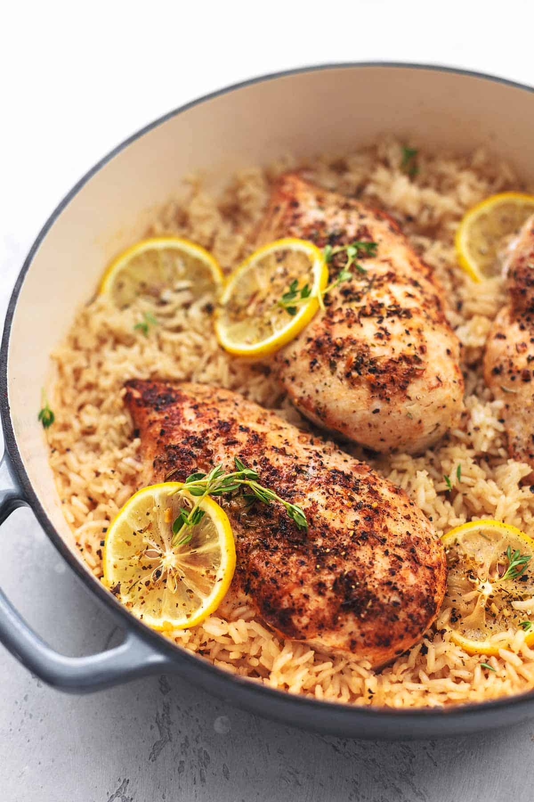

One-Pot Lemon Herb Chicken & Rice
Ingredients
Instructions
- Heat olive oil in a large pot over medium heat. Season chicken thighs with salt, pepper, thyme, and rosemary. Add to the pot and cook until browned on both sides, about 5 minutes per side. Remove from pot and set aside.
- Add rice to the pot and stir to coat in the oil and chicken drippings. Pour in chicken broth and bring to a boil.
- Return chicken to the pot and place lemon slices on top. Cover and reduce heat to low. Simmer for 20-25 minutes, or until rice is cooked and chicken is no longer pink in the center.
- Stir in fresh parsley before serving.